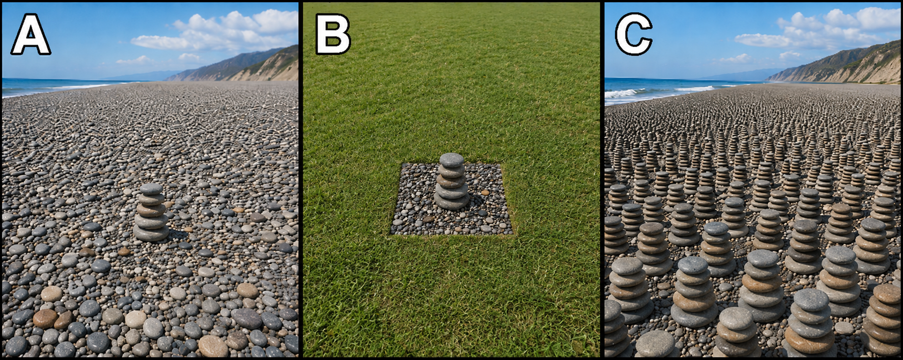

Prior bridge audit
Fine-Tuning Bridge Audit
Start here when fine-tuning is doing more than support a thin design hunch. This page checks whether the move from life-permitting conditions to life-purpose, human-purpose, or Christian theism has actually been earned, or whether hidden assumptions are quietly doing the work.
How these dashboard metrics and later pressure readings are computed
The first three cards explain the top dashboard metrics above. The Human-target pressure card explains the later pressure reading that appears in the Step 6 diagnosis box, not in the top dashboard row.
Honest ceiling
This is the highest route whose required bridges are all marked Substantiated and also have a real support note attached. If even one required bridge is still Missing, Asserted, or lacks a support note, the ceiling stops lower.
Prior pressure
This tracks whether identity pull, delegated trust, or one-sided standards may already be carrying confidence before the bridge work is done. It is not the same as human-target pressure. You can have high prior pressure even if the argument is not leaning hard toward humans, and you can have strong human-target pressure even if prior pressure is low.
World-shape tension
This compares the actual-universe beach with the route-relevant expected beach. If they match, the tension is low. If they are one step apart, the tension is moderate. If they are two steps apart, the tension is high. It stays unset until both beaches are chosen.
Human-target pressure in Step 6
This is different from prior pressure. It measures whether the argument is leaning toward humans or persons more strongly than toward order, stars, black holes, or unknown ends. It rises again on thicker routes, and it rises further if the human-target bridge is still not substantiated.
Step 1
State the claim before the bridge work begins
Fine-tuning can be asked to do very different jobs. A thin design claim is one thing. A life-purpose claim is thicker. A human-purpose claim is thicker still. A Christian conclusion adds another bridge entirely.
Preset lenses
Load a comparison posture
Step 2
Check whether prior commitments are already doing part of the work
This section does not assume bad faith. It simply asks whether belonging, delegated trust, or one-sided standards may already be raising confidence before the actual bridge premises have been supplied.
Step 3
Audit the bridge premises directly
Mark each bridge as Missing, Asserted, or Substantiated. A substantiated bridge should have a support note naming what is actually doing the work.
Step 4
Compare world-shape expectations with the beach analogy
The analogy is not a proof by itself. It is a way of separating life-permitting from life-abundant. A vast beach with one five-high stack feels different from a tiny beach with one stack or a vast beach with stacks nearly everywhere.

Scenario A
Massive beach, one five-high stack
Huge search space, one rare success pocket, vast unused remainder.
Scenario B
Tiny one-square-meter beach, one five-high stack
Small arena, one success, but not a gigantic surplus of empty opportunity.
Scenario C
Massive beach, stacks nearly everywhere
Success is widespread, easy to find, and looks more like the target of the setup.
For Design only, the key beach comparison is between the actual universe and a designer who could be content with only a little life.
Use the selects below to say which beach best matches the actual universe and which beach each model would naturally predict.
Step 5
Keep target ambiguity visible
Even if a fine-tuner existed, the argument still has to say what looks most like the intended target. This step asks whether the observed universe looks more aimed at order, large-scale structure, a little life, abundant life, humans, or some still unclear end.
How to use this step
Score each possible target, not just the one you prefer
Move a slider to the right when that option seems more plausible as the intended target if fine-tuning were real. A higher number does not mean you personally like that option. It means you think it better fits what the universe actually looks like.
Step 6
Read the current honest ceiling
This step compares the conclusion you wanted fine-tuning to support with the strongest conclusion the current bridge work actually earns. The goal is not to force a pro- or anti-design answer, but to state the current limit more plainly.
How to read this box
Selected target is the conclusion you wanted fine-tuning to support. Highest fully earned claim is as far as the substantiated bridges actually take you. Highest still tentatively live is how far the case could go if the merely asserted bridges later hold up.
Current read
Bridge not yet earned
Claim You Asked For
Design only
This is the route you wanted fine-tuning to carry.
Highest Fully Earned Claim
Below design
This is the furthest the fully substantiated bridges currently take you.
Highest Still Tentatively Live
Below design
This is how far the case could go if the asserted bridges later hold up.
Pressure Toward A Human-Centered Reading
0
This is different from prior pressure. It tracks human-centered overreach.
Pressure list
Why does the current ceiling stop where it does?
These yellow points of pressure appear only when the current inputs create real pressure. As you change the route, bridge statuses, world-shape mappings, or target sliders, this list will update and may grow, shrink, or disappear.
Step 7
Carry the result into the Theism Gradient
This page is upstream. The next useful move is to enter the larger gradient with the fine-tuning bridge pressure already named, rather than letting it dissolve into a much wider Christian conclusion.
Step 8
Fine-Tuning Bridge Audit Q&A
Use these notes when you want help interpreting the tool without flattening it into a verdict machine.
What is this tool trying to do before the Theism Gradient begins?
It isolates the bridge work that often gets smuggled into fine-tuning arguments. The tool asks whether you have really earned the move from life-permitting conditions to design, from design to life-purpose, from life-purpose to human-purpose, and from there to a personal or Christian God.
The point is not to stop inquiry early. The point is to keep the early steps honest so that later conclusions do not inherit more support than they actually have.
Why does the tool ask about prior commitments?
Because the live question is not only whether fine-tuning sounds impressive. It is also whether identity, delegated trust, fear of loss, or asymmetrical standards are already carrying part of the confidence.
High prior pressure does not mean the conclusion is false. It means some of the confidence may be arriving before the bridge premises have been made explicit.
What does the beach analogy add that ordinary fine-tuning language can hide?
The analogy separates rare local success from abundant target achievement. A vast beach with one five-high stack is not the same shape as a vast beach with stacks almost everywhere.
That distinction matters because one tiny life pocket in a vast hostile cosmos does not automatically look like a universe optimized for life, much less for humans or Christianity.
Why ask about black holes, order, or unknown goals?
Because even if a fine-tuner existed, the argument still has to explain why human life should count as the target. A creator might prefer mathematical elegance, stable order, black holes, sparse observers, abundant life, or ends we do not understand.
The tool uses target-ambiguity sliders to stop human goals from being quietly assumed merely because humans are the ones asking the question.
Why require a note when I mark a bridge as substantiated?
Because “substantiated” should name what is actually doing the work. Otherwise the label can become a confidence marker instead of a support marker.
The note does not need to be long. It just needs to say what evidence, argument, or control is carrying that bridge.
Is this page assuming naturalism is true?
No. It is not a verdict machine. It checks whether the argument's own bridge premises have been made explicit and whether the actual universe resembles what the selected conclusion would naturally predict.
You can finish this page still thinking design is live. The goal is simply to say more honestly how far the current bridge work really goes.
What should count as a good result?
A good result is a cleaner sentence. You may end with “fine-tuning at most supports a thin design hunch,” or “life-purpose is tentatively live but human-purpose is not,” or “the actual world shape creates pressure on the stronger conclusion.”
That kind of narrowing is progress because it replaces a blurred conclusion with one that can be examined more responsibly.
What should I do after finishing this page?
Use the guided handoff into the Theism Gradient. This page is meant to prepare the design-deism section of that larger audit, especially the claims about fine-tuning, life-purpose, conscious beings, and life-permitting preference.
If the current ceiling stays low here, that does not settle the wider worldview. It simply means later claims should not quietly borrow a stronger fine-tuning bridge than the audit actually supports.
Step 9
Export the bridge audit
Copy a compact report for notes and discussion, or copy the structured AI prompt to keep the same pressure points visible in a follow-up conversation.
Bridge audit summary
A compact report of the selected claim, current ceiling, bridge ledger, and repair list.
Structured AI prompt
Use this prompt to give another AI assistant the full context, so it can test the current fine-tuning argument, question weak bridge steps, and respond without losing the key details from this audit.